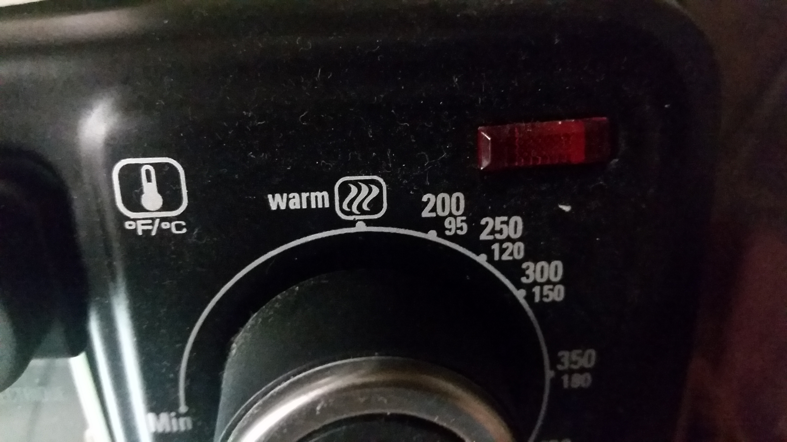
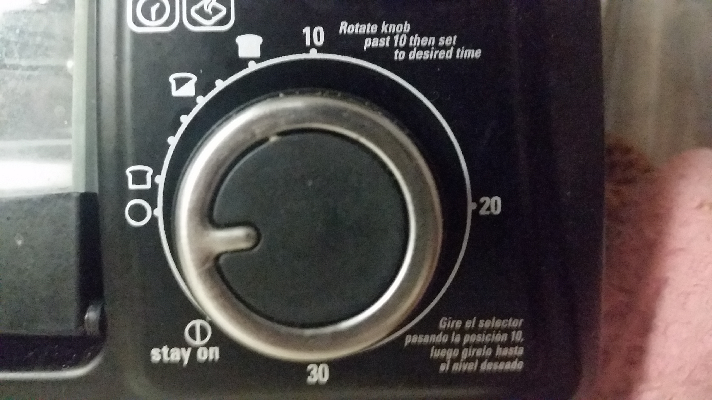
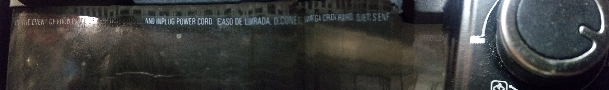
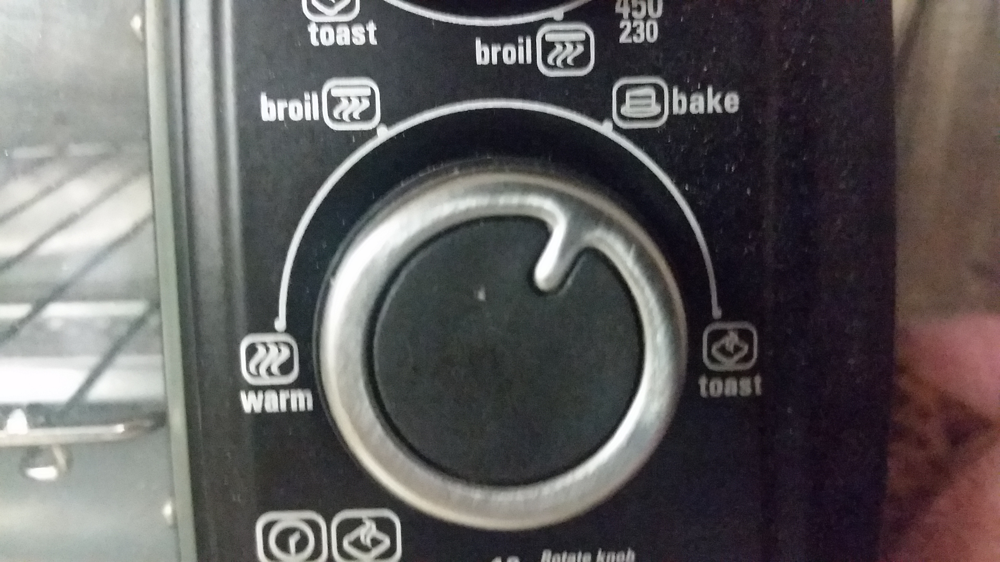

While this oven is ideal for quick baking and toasting, it has some design issues. First of all, the temperatures, on the first knob, are given in both Fahrenheit and Celsius, but compared to Fahrenheit, Celsius is written in smaller writings. Initially the user would have to see the side to see if Fahrenheit is written first of Celsius. Even after seeing that label, the users would have difficulties reading Celsius temperature because it is written in smaller fonts.

Another issues is that, the toaster have a label in Spanish, which instructs users to pass the knob to 10 before setting time. This label is written towards the bottom side in tiny fonts. It is very easy to miss this instruction. Therefore, having an option in Spanish is not that beneficial to the users.

Another important instruction, "in the event of food flare-up keep door closed and unpluge the powercord", is written on the door glass. It is written in white color, right underneath the handle that it can be easily missed out by the users and it is not readable.

The first two knobs have same options. It would be redundent; thus, it a user can forget to select an option from one of the knobs.
Overall, the labels around the knobs are mapped clearly. User can tell which mapping is referring to which knob and the icons are well designed to inform the users what it is referring to.
With this design, the user can easily miss the instruction of passing 10 to set time. Furthermore, because temperature is given in Fahrenheit and Celsius, the users can misread the temperature's unit. Also there is an option called "stay on". If user does not rotate the knob proparly, they can miss that label and the timer would never go off.